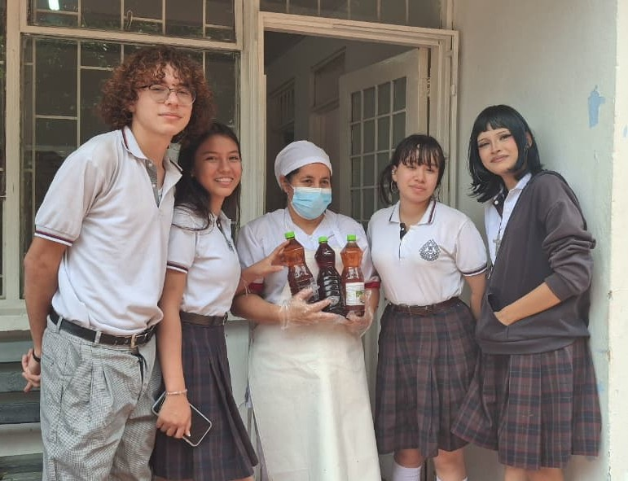

Reutilización de aceite usado para productos sostenibles
¿Sabía usted que tan solo un litro de aceite de cocina usado puede contaminar hasta 40,000 litros de agua?
Bienvenidos a nuestro proyecto ambiental 🌱
Somos estudiantes de grado 11 del programa de Técnica en Promotoría en Manejo Ambiental del Instituto Técnico
Mercedes Ábrego, y hemos creado este espacio con el propósito de compartir una iniciativa que nace desde la
conciencia, el compromiso y el deseo de generar un cambio positivo en nuestro entorno.
En esta página encontrarás el desarrollo de nuestro proyecto enfocado en la reutilización del aceite de
cocina usado, un residuo que, aunque común, puede causar graves daños al medio ambiente cuando no se maneja
adecuadamente. A través de nuestro trabajo, buscamos demostrar que es posible transformar este desecho en
productos útiles y sostenibles como jabones, velas ecológicas y soluciones de limpieza como el fabuloso.
Más allá de recolectar aceite, nuestra propuesta también promueve el aprovechamiento de materiales
reciclables, como envases plásticos, contribuyendo así a la reducción de residuos y al cuidado de nuestros
recursos naturales.
Este proyecto no solo busca disminuir la contaminación del agua y del suelo, sino también fomentar una
cultura ambiental responsable, donde cada acción cuenta y cada pequeño cambio puede generar un gran impacto.
Te invitamos a conocer nuestro trabajo, a reflexionar sobre el cuidado del medio ambiente y a ser parte de
este camino hacia un futuro más sostenible 💚

Somos un grupo de estudiantes comprometidos con el cuidado del medio ambiente, pertenecientes al Instituto Técnico Mercedes Ábrego. A través de nuestra formación en el área ambiental, hemos desarrollado este proyecto con el fin de aportar soluciones reales a problemáticas presentes en nuestra comunidad educativa.
Promover el aprovechamiento responsable del aceite de cocina usado mediante su recolección y transformación en productos ecológicos, contribuyendo a la reducción de la contaminación ambiental y fortaleciendo la educación ambiental en la comunidad.
Ser una iniciativa estudiantil reconocida por su aporte al cuidado del medio ambiente, fomentando prácticas sostenibles y el desarrollo de proyectos ecológicos que puedan ser replicados en otras instituciones.
Responsabilidad ambiental: Porque entendemos que nuestras acciones tienen un impacto directo en el entorno,
asumimos el compromiso de cuidar y proteger los recursos naturales.
Compromiso: Trabajamos con dedicación y constancia para cumplir nuestros objetivos y aportar soluciones
reales a una problemática ambiental.
Trabajo en equipo: Creemos que las mejores ideas nacen de la unión y el esfuerzo conjunto, donde cada
integrante aporta para lograr un mismo propósito.
Innovación: Buscamos nuevas formas de transformar los residuos en oportunidades, proponiendo
alternativas creativas y sostenibles.
Conciencia ecológica: Promovemos el respeto por el medio ambiente, fomentando hábitos responsables en
nuestra comunidad.
Sostenibilidad: Pensamos en el presente sin comprometer el futuro, desarrollando acciones que puedan
mantenerse en el tiempo y generar un impacto positivo.
Nuestro proyecto tiene como objetivo principal reutilizar el aceite vegetal usado proveniente del comedor del Instituto Técnico Mercedes Ábrego, transformándolo en productos alternativos sostenibles que contribuyan al cuidado del medio ambiente.
A través de este proceso, buscamos no solo reducir el impacto ambiental, sino también incentivar una cultura de aprovechamiento de residuos y consumo responsable.